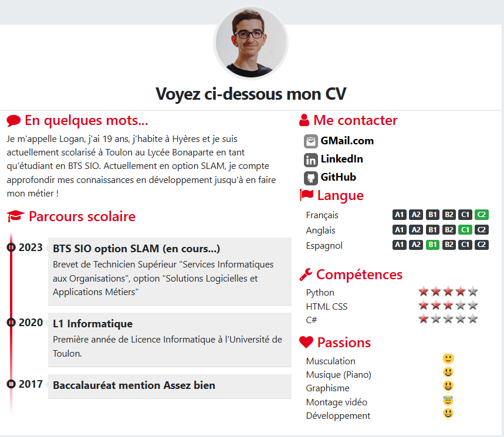
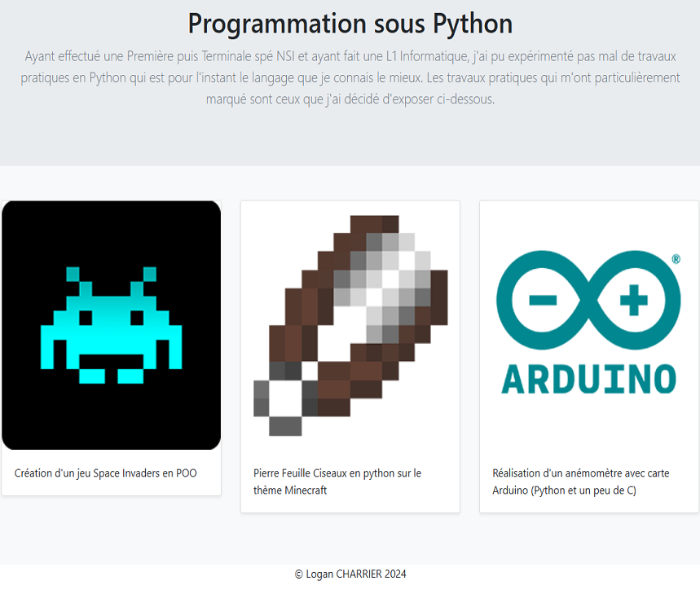
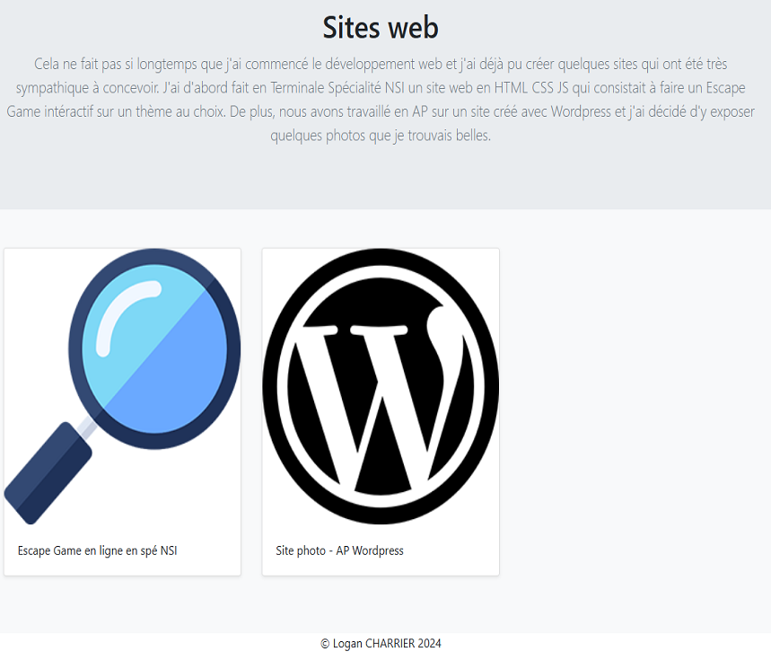

Amélia Pilou - Introduction au portfolio
Description
Le portfolio d’Amélia Pilou a été réalisé au début de ma première année de BTS SIO option SLAM : nous devions créer un portfolio très minimaliste
pendant les vacances de Noël. Pour gérer l’historique du code, j’ai utilisé Git en suivant la méthodologie Git Flow sur GitHub, et j’ai organisé les
tâches via le ticketing et un tableau Kanban directement sur la plateforme. C’était assez conséquent puisque le PDF guide comportait 69 pages.
J’ai également intégré Bootstrap pour obtenir un rendu à la fois épuré et responsive. Ce projet d’introduction nous a permis de comprendre les bases
essentielles en développement web qui me servent par exemple encore aujourd’hui pour mon nouveau portfolio. De plus, il a permis de savoir ce que nous
devions mettre dans notre portfolio pour l’examen puisque nous avons fini par le customiser à notre effigie.
Captures d'écran




Compétences travaillées
Nous avons un tableau sur lequel nous devons référencer les
compétences travaillées lors de chaque projet.
Pour le portfolio d'Amélia Pilou, nous avons mobilisé les compétences ci-dessous :
Pour le portfolio d'Amélia Pilou, nous avons mobilisé les compétences ci-dessous :
• Gérer le patrimoine informatique
• Répondre aux incidents
et aux demandes d’assistance et d’évolution
• Travailler en
mode projet
• Organiser son développement professionnel